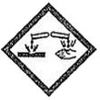
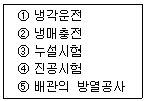
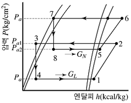
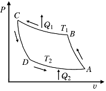
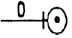
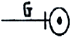
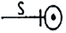
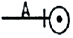
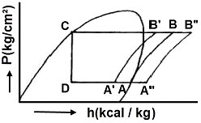

공조냉동기계기능사 (2010-01-31 기출문제)
1과목: 공조냉동안전관리
1. 소화제로 물을 사용하는 이유로서 가장 적당한 것은?
- 산소를 잘 흡수하기 때문
- 증발잠열이 크기 때문
- 연소하지 않기 때문
- 산소와 가열물질을 분리시키기 때문
(정답률: 91%)

2. 운반기계에 의한 운반작업 시 안전수칙에 어긋나는 것은?
- 운반대위에는 여러 사람이 타지 말 것
- 미는 운반차에 화물을 실을 때에는 앞을 볼 수 있는 시야를 확보할 것
- 운반차의 출입구는 운반차의 출입에 지장이 없는 크기로 할 것
- 운반차에 물건을 쌓을 때 될 수 있는 대로 전체의 중심이 위가 되도록 쌓을 것
(정답률: 92%)
3. 안전관리의 목적을 가장 올바르게 나타낸 것은?
- 기능향상을 도모한다.
- 경영의 혁신을 도모한다.
- 기업의 시설투자를 확대한다.
- 근로자의 안전과 능률을 향상시킨다.
(정답률: 93%)
4. 감전의 위험성에 대한 내용으로 틀린 것은?
- 통전의 위험도에서 전기 기구는 오른손으로 사용하는 것보다는 왼손으로 사용하는 것이 안전하다.
- 저압 전기라도 인체에 흐르는 전류의 양이 크면 위험하므로 조심해야 된다.
- 전압이 동일한 경우 교류는 직류보다 위험하며 교류인 경우 주파수에 따라 위험성이 다르다.
- 감전은 전류의 크기, 통전시간, 통전경로, 전원의 종류에 따라 그 위험성이 결정된다.
(정답률: 88%)
5. 일반적으로 볼 때 안전대책은 무슨 방법으로 수립해야 좋은가?
- 사무적
- 계획적
- 경험적
- 통계적
(정답률: 78%)
6. 방폭 전기설비를 선정할 경우 중요하지 않은 것은?
- 대상가스의 종류
- 방호벽의 종류
- 폭발성 가스의 폭발 등급
- 발화도
(정답률: 77%)
7. 가연성 가스가 있는 고압가스 저장실 주위에는 화기를 취급해서는 안 된다. 이때 화기를 취급하는 장소와 몇 m 이상의 거리를 두어야 하는가?
- 1
- 2
- 7
- 8
(정답률: 85%)
8. 볼트 조임 작업시 안전사항이다. 맞게 기술한 것은?
- 공기 또는 물 등의 유체가 누설되는 것을 방지하기 위하여 스패너에 파이프를 끼워 단단히 조인다.
- 단단히 조이기 위해서는 스패너를 망치로 두둘겨 조인다.
- 스패너가 규격보다 클 때는 얇은 철판을 끼워 너트 머리에 꼭 맞도록 한 후 조인다.
- 볼트 조임 작업시 스패너가 벗겨지더라도 넘어지지 않도록 몸가짐에 주의 한다.
(정답률: 77%)
9. 보일러의 과열 원인으로 옳지 않은 것은?
- 동(胴)내면에 스케일 생성 시
- 보일러수가 농축되어 있을 때
- 전열면에 국부적인 열을 받았을 때
- 보일러수의 순환이 양호할 때
(정답률: 88%)
10. 온열원 발생장치인 보일러설비의 운전 중 보일러의 과열을 방지하기 위하여 최고사용압력과 상용압력사이에서 보일러의 버너연소를 차단할 수 있도록 부착하여야 하는 안전장치는?
- 압력제한 스위치
- 안전밸브
- 저압차단 스위치
- 고압차단 스위치
(정답률: 62%)
11. 산업안전 표시 중 다음 그림이 나타내는 의미는?

- 부식성 물질 경고
- 낙하물 경고
- 방사성 물질 경고
- 몸균형 상실 경고
(정답률: 87%)
12. 신규 검사에 합격된 냉동용 특정설비의 각인 사항과 그 기호의 연결이 올바르게 된 것은?
- 용기의 질량：TM
- 내용적：TV
- 최고 사용압력：FT
- 내압 시험압력：TP
(정답률: 85%)
13. 수공구인 망치(hammer)의 안전 작업수칙으로 올바르지 못한 것은?
- 작업 중 해머 상태를 확인할 것
- 해머는 처음부터 힘을 주어 치지말 것
- 불꽃이 생기거나 파편이 발생할 수 있는 작업 시에는 반드시 차광안경을 착용할 것
- 해머의 공동 작업 시에는 호흡을 맞출 것
(정답률: 73%)
14. 크레인의 방호장치로서 와이어로프가 후크에서 이탈하는 것을 방지하는 장치는?
- 과부하 방지 장치
- 권과 방지 장치
- 비상 정지 장치
- 해지 장치
(정답률: 68%)
15. 냉동장치를 설비할 때 (보기)의 작업순서가 올바르게 나열된 것은?

- ③ → ④ → ② → ⑤ → ①
- ④ → ⑤ → ③ → ② → ①
- ③ → ⑤ → ④ → ② → ①
- ④ → ② → ③ → ⑤ → ①
(정답률: 73%)
2과목: 냉동기계
16. 다음 그림은 무슨 냉동사이클 이라고 하는가?

- 2단 압축 1단 팽창 냉동사이클이라 한다.
- 2단 압축 2단 팽창 냉동사이클이라 한다.
- 2원 냉동사이클이라 한다.
- 강제 순환식 2단 사이클이라 한다.
(정답률: 76%)
17. 다음 그림과 같은 역카르노 사이클에 대한 설명이 옳은 것은?

- C → D의 과정은 압축과정이다.
- B → C, D → A의 변화는 등온변화이다.
- A → B는 냉동장치의 증발기에 해당되는 구간이다.
- 역카르노 사이클은 1개의 단열과정과 2개의 등온 과정으로 표시된다.
(정답률: 80%)
18. 냉동장치의 팽창밸브 용량을 결정하는 것은?
- 밸브 시트의 오리피스 직경
- 팽창밸브의 입구의 직경
- 니들 밸브의 크기
- 팽창밸브의 출구의 직경
(정답률: 69%)
19. 압축기 용량제어의 목적이 아닌 것은?
- 경제적 운전을 하기 위하여
- 일정한 증발온도를 유지하기 위하여
- 경부하 운전을 하기 위하여
- 응축압력을 일정하게 유지하기 위하여
(정답률: 45%)
20. 다이 헤드형 동력나사 절삭기로 할 수 없는 작업은?
- 파이프 벤딩
- 파이프 절단
- 나사 절삭
- 리머 작업
(정답률: 75%)
21. 브라인의 구비조건 중 틀린 것은?
- 공정점과 점도가 낮을 것
- 전열이 양호할 것
- 부식성이 적고 냉장품을 변질, 변색시키지 말 것
- 구입이 용이하고 열용량이 적을 것
(정답률: 72%)
22. 2단압축 냉동장치에서 각각 다른 2대의 압축기를 사용하지 않고 1대의 압축기가 2대의 압축기 역할을 할 수 있는 압축기는?
- 부스터 압축기
- 캐스캐이드 압축기
- 콤파운드 압축기
- 보조 압축기
(정답률: 70%)
23. 순저항(R)만으로 구성된 회로에 흐르는 전류와 전압과의 위상 관계는?
- 90° 앞선다.
- 90° 뒤진다.
- 180° 앞선다.
- 동위상이다.
(정답률: 73%)
24. 강관의 나사 이음쇠가 아닌 것은?
- 크로스
- 엘보
- 부스터
- 니플
(정답률: 73%)
25. 관속을 흐르는 유체가 가스일 경우 도시기호는?




(정답률: 90%)
26. 어떤 냉동사이클의 증발온도가 －15℃이고 포화액의 엔탈피가 100kcal/kg, 건조 포화증기의 엔탈피가 160kcal/kg, 증발기에 유입되는 습증기의 건조도 0.25일 때 냉동효과는?
- 15kcal/kg
- 35kcal/kg
- 45kcal/kg
- 75kcal/kg
(정답률: 42%)
27. 흡수식 냉동장치에는 안전확보와 기기의 보호를 위하여 여러 가지 안전장치가 설치되어 있다. 그 목적에 해당되지 않는 것은?
- 냉수 동결방지
- 흡수액 결정방지
- 압력상승방지
- 압축기 보호
(정답률: 71%)
28. 강제 급유식에 사용되는 오일펌프의 종류가 아닌 것은?
- 플런저 펌프
- 로터리 펌프
- 터보 펌프
- 기어 펌프
(정답률: 47%)
29. 냉동 사이클에서 액관 여과기의 규격은 보통 몇 매쉬(mash)인가?
- 40
- 60∼70
- 80∼100
- 150
(정답률: 71%)
30. 기체를 액화시키는 방법으로 옳은 것은?
- 임계압력 이하로 압축한 후 냉각시킨다.
- 임계온도 이상으로 가열한 후 압력을 높인다.
- 임계압력 이상으로 가압하고 임계온도 이하로 냉각한다.
- 임계온도 이하로 냉각하고 임계압력 이하로 감압한다.
(정답률: 60%)
31. 증발열을 이용한 냉동법이 아닌 것은?
- 증기분사식 냉동법
- 압축 기체 팽창 냉동법
- 흡수식 냉동법
- 증기 압축식 냉동법
(정답률: 56%)
32. 다음 설명 중 틀린 것은?
- 전위차가 높을수록 전류는 잘 흐르지 않는다.
- 물체의 마찰 등에 의하여 대전된 전기를 전하라 한다.
- 1초 동안에 1[C]의 전기량이 이동하면 전류는 1[A]이다.
- 전기의 흐름을 방해하는 정도를 나타내는 것을 전기저항이라 한다.
(정답률: 67%)
33. LNG 냉열이용 동결장치의 특징으로 맞지 않는 것은?
- 식품과 직접 접촉하여 급속동결이 가능하다.
- 외기가 흡입되는 것을 방지한다.
- 공기에 분산되어 있는 먼지를 철저히 제거하여 장치내부에 눈이 생기는 것을 방지한다.
- 저온공기의 풍속을 일정하게 확보함으로써 식품과의 열전달계수를 저하시킨다.
(정답률: 63%)
34. 고온부에서 방출하는 열량을 이용하여 난방을 행하는 열펌프의 고온부 온도가 30℃이고, 저온부 온도가 －10℃일 때 이 열펌프의 성적계수는?
- 약 4.5
- 약 5.5
- 약 6.5
- 약 7.5
(정답률: 36%)
35. 1 BTU는 몇 kcal 인가?
- 3.968
- 0.252
- 252
- 1.8
(정답률: 53%)
36. 압축기 보호장치 중 고압차단 스위치(HPS)의 작동압력은 정상적인 고압에 몇 kgf/cm2 정도 높게 설정하는가?
- 1
- 4
- 10
- 25
(정답률: 69%)
37. 시트 모양에 따라 삽입형, 흡꼴형, 유합형 등으로 구분되는 배관 이음방법은?
- 플레어 이음
- 나사 이음
- 납땜 이음
- 플렌지 이음
(정답률: 66%)
38. 원심(Turbo)식 압축기의 특징이 아닌 것은?
- 진동이 적다.
- 1대로 대용량이 가능하다.
- 접동부(摺動部)가 없다.
- 용량에 비해 대형이다.
(정답률: 60%)
39. 프레온 냉동장치에서 오일 포밍 현상이 일어나면 실린더내로 다량의 오일이 올라가 오일을 압축하여 실린더 헤드부에서 이상 음이 발생하게 되는 현상은?
- 에멀죤 현상
- 동부착 현상
- 오일 포밍 현상
- 오일 해머 현상
(정답률: 78%)
40. 수냉식 응축기의 능력은 냉각수 온도와 냉각수량에 의해 결정이 되는데, 응축기의 능력을 증대시키는 방법에 관한 사항 중 틀린 것은?
- 냉각수온을 낮춘다.
- 응축기의 냉각관을 세척한다.
- 냉각수량을 줄인다.
- 냉각수 유속을 적절히 조절한다.
(정답률: 71%)
41. 냉동장치의 냉각기에 적상이 심할 때 미치는 영향이 아닌 것은?
- 냉동능력 감소
- 냉장고내 온도 저하
- 냉동 능력당 소요동력 증대
- 리키드 백 발생
(정답률: 60%)
42. 고속다기통 압축기 유압계의 정상유압으로 옳은 것은?
- 정상 저압 ＋ 4∼6kgf/cm2
- 정상 고압 ＋ 1.5∼3kgf/cm2
- 정상 고압 ＋ 4∼6kgf/cm2
- 정상 저압 ＋ 1.5∼3kgf/cm2
(정답률: 55%)
43. 시퀀스도의 설명으로 가장 적합한 것은?
- 부품의 배치 배선 상태를 구성에 맞게 그린 것이다.
- 동작 순서대로 알기 쉽게 그린 접속도를 말한다.
- 기기 상호간 및 외부와의 전기적인 접속관계를 나타낸 접속도를 말한다.
- 전기 전반에 관한 계통과 전기적인 접속관계를 단선으로 나타낸 접속도이다.
(정답률: 69%)
44. 증발온도와 응축온도가 일정하고 과냉각도가 없는 냉동사이클에서 압축기에 흡입되는 냉매 증기의 상태가 변화했을 때 선도 중 건조 포화압축 냉동사이클은?

- A-B-C-D-A
- A'-B'-C-D-A'
- A"-B"-C-D-A''
- A'-B'-B''-A"-A'
(정답률: 68%)
45. 냉동장치 배관 설치시 주의 사항으로 틀린 것은?
- 냉매의 종류, 온도 등에 따라 배관재료를 선택한다.
- 온도변화에 의한 배관의 신축을 고려한다.
- 기기 조작, 보수, 점검에 지장이 없도록 한다.
- 굴곡부는 가능한 적게 하고 곡률 반경을 작게 한다.
(정답률: 83%)
3과목: 공기조화
46. 수정 유효온도는 유효온도에 무엇의 영향을 고려한 것인가?
- 온도
- 습도
- 기류
- 복사열
(정답률: 63%)
47. 설비공사 비용 중 차지하는 비용(％)이 가장 큰 것은?
- 급배수 설비
- 공기조화기 및 덕트
- 전기 설비
- 승강기 설비
(정답률: 73%)
48. 고성능 필터 성능을 측정하는 방법으로 시험입자를 사용하여 입자의 수를 계측하는 방법은?
- 중량법
- 비색법
- 점착법
- 계수법
(정답률: 79%)
49. 온수 베이스 보드 난방(hot water base board heating)에서 가열면의 공기 유동을 조절하기 위한 장치는?
- 라지에터
- 드레인 밸브
- 그릴
- 서모스텟
(정답률: 50%)
50. 감습장치에 대한 내용 중 옳지 않은 것은?
- 압축 감습장치는 동력소비가 적다.
- 냉각 감습장치는 노점온도 제어로 감습한다.
- 흡수식 감습장치는 흡수성이 큰 용액을 이용한다.
- 흡착식 감습장치는 고체 흡수제를 이용한다.
(정답률: 54%)
51. 난방 부하가 3000kcal/h인 온수 난방시설에서 방열기의 입구온도가 85℃, 출구온도가 25℃, 외기온도가 －5℃일 때, 온수의 순환량은 얼마인가? (단, 물의 비열은 1kcal/kg℃이다.)
- 50kg/h
- 75kg/h
- 150kg/h
- 450kg/h
(정답률: 31%)
52. 난방 방식의 분류에서 간접 난방에 해당하는 것은?
- 온수난방
- 증기난방
- 복사난방
- 히트펌프난방
(정답률: 59%)
53. 자연환기에 관한 설명 중 틀린 것은?
- 자연환기는 실내외의 온도차에 의한 부력과 외기의 풍압에 의한 실내외의 압력차에 의해 이루어진다.
- 자연환기에 의한 방의 환기량은 그 방의 바닥 부근과 천장 부근의 공기 온도차에 의해 결정되는데, 급기구 및 배기구의 위치에는 무관하다.
- 자연환기는 자연력을 이용하므로 동력은 필요하지 않지만 항상 일정한 환기량을 얻을 수 없다.
- 자연환기로 공장 등에서 다량의 환기량을 얻고자 할 경우는 벤틸레이터를 지붕면에 설치한다.
(정답률: 73%)
54. 2중 덕트 방식에 대한 설명 중 잘못된 것은?
- 실의 냉·난방 부하가 감소되어도 취출공기의 부족현상이 없다.
- 실내습도의 완전한 조절이 가능하다.
- 부하특성이 다른 다수의 실에 적용할 수 있다.
- 설비비 및 운전비가 많이 든다.
(정답률: 55%)
55. 건축물의 벽이나 지붕을 통하여 실내로 침입하는 열량을 구할 때 관계없는 요소는?
- 구조체의 면적
- 구조체의 열관류율
- 상당외기 온도차
- 차폐계수
(정답률: 77%)
56. 다음 중 용어의 설명이 틀린 것은?
- 대기 중에는 습공기가 존재하지 않으므로 공기조화에서 취급되는 공기는 모두 건공기이다.
- 절대습도는 습공기에서 수증기의 중량을 건조공기의 중량으로 나눈 값이다.
- 습구온도는 온도계의 감열부를 물에 젖은 헝겊으로 싼 상태에서 가리키는 온도를 말한다.
- 노점온도는 공기 중의 수증기가 응축하기 시작할 때의 온도, 즉 공기가 수증기 포화상태로 될 때의 온도를 말한다.
(정답률: 76%)
57. 패키지형 공조방식의 특징으로 틀린 것은?
- 자동운전이며 개별제어 및 유지관리가 쉽다.
- 대량 생산이 가능하며 품질도 안정되어 있다.
- 특별한 기계실이 필요 없고 설치면적도 작다.
- 실내 설치는 가능하지만 덕트 접속은 불가능하다.
(정답률: 63%)
58. 난방공조에서 실내온도(코일의 입구온도)가 23℃, 현열량 4000kcal/h, 풍량이 2400kg/h이면 코일의 출구온도는 약 얼마인가?
- 26.95℃
- 29.94℃
- 33.42℃
- 36.52℃
(정답률: 46%)
59. 동일한 용량의 다른 보일러에 비해 전열면적이 크고 기동시간이 짧으며, 고압증기를 만들기 쉬워서 대용량에 적합한 것은?
- 주철제 보일러
- 입형 보일러
- 노통 보일러
- 수관 보일러
(정답률: 50%)
60. 석면으로 만든 박판 등의 소재에 흡수제로 염화리튬을 침투시킨 판을 사용하여 현열과 잠열을 동시에 열교환하는 공기 대 공기 열교환기는?
- 판형 열교환기
- 쉘 앤드 튜브형 열교환기
- 히트 파이프형 열교환기
- 전열 열교환기
(정답률: 41%)